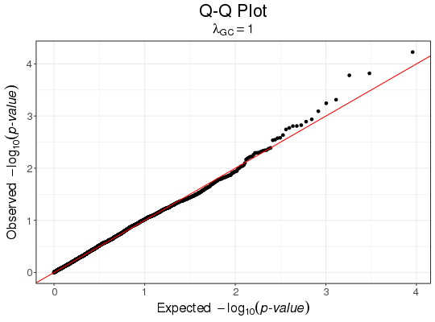
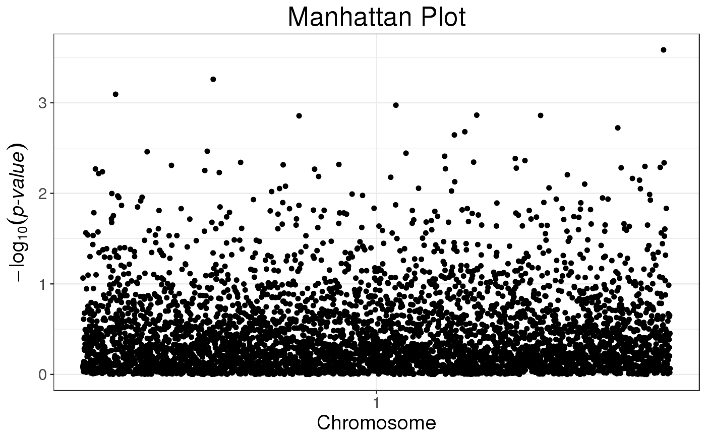

Q-Q plot
Creates a quantile-quantile plot from p-values from a GWAS study.
snp_qq(gwas, lambdaGC = TRUE, coeff = 1)
Arguments
| gwas | A |
|---|---|
| lambdaGC | Add the Genomic Control coefficient as subtitle to the plot? |
| coeff | Relative size of text. Default is |
Value
A ggplot2 object. You can plot it using the print method.
You can modify it as you wish by adding layers. You might want to read
this chapter
to get more familiar with the package ggplot2.
Examples
set.seed(9) test <- snp_attachExtdata() G <- test$genotypes y <- rnorm(nrow(G)) gwas <- big_univLinReg(G, y) snp_qq(gwas)# The next plot should be prettier with a real dataset snp_manhattan(gwas_gc, infos.chr = test$map$chromosome, infos.pos = test$map$physical.pos)# NOT RUN { plotly::ggplotly(p, tooltip = "text") # }